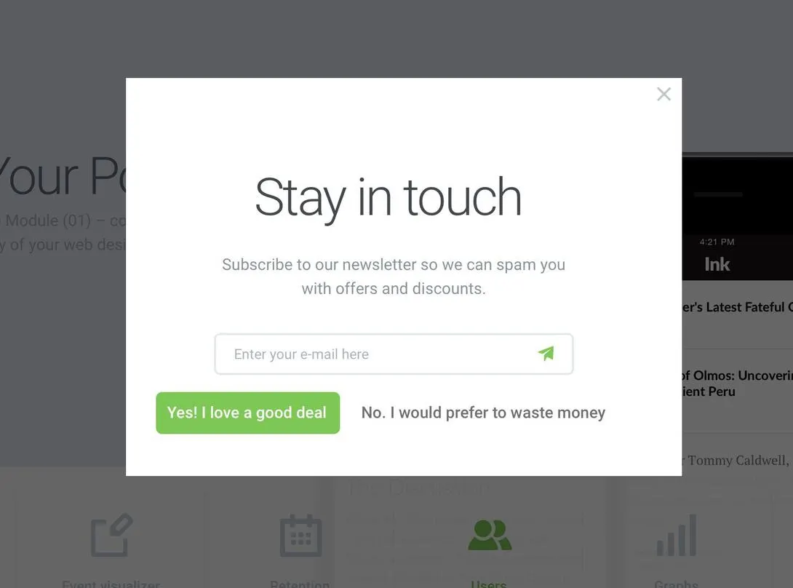

Modern UI Patterns:
Building A great UX
with the latest CSS
Una Kravets ♥ una.im
Google Chrome DevRel

AI
How to build
So in the past few months I've been on a journey to adapt to this new landscape and think about what really matters to people. And what matters is still the same: creating a great user experience. But what does that really mean? After years focusing on mostly code, it has been a while since I've been in the design space. I felt crusty. So I've been diving into modern UI patterns and exploring how to really align all of these awesome new features we have in CSS to them.
@alxui_ux
-- images of good examples of modern UI patterns -- So I turned to the internet, I changed my algorithm to mostly follow designers, I started collecting examples of great UI patterns, and I've been working with our UX Research team to validate them. This is what we've come up with as a way to think about the next generation of web technologies.Key UX Principles
- Respect user preferences
- Maximize content, reduce noise
- Implement natural interactions
- Provide guided navigation
- Adapt to the form factor
Appy experiences
1. Respect user preferences
Let your user co-design the experience.

Image from Paul Boag
1. Reduce noise
Avoid pop-ups/banners that obscure the screen.
Eliminate visual clutter and application borders.
Keep the interface clean and focused.

@azhassan_
<a href="#" class="nav-item">
<svg>...</svg>
<span>Profile</span>
<div class="dot" aria-hidden="true"></div>
</a>.nav-item {
/* styles */
@container scroll-state(scrolled: bottom) {
width: var(--smaller-dot-width);
svg { scale: 0; opacity: 0; ... }
.dot { scale: 1; opacity: 1; }
}
}Scroll-driven animation
@O_Pawica
.info, h2, header, #button-edit, .bg {
animation-timeline: scroll();
animation-range: 0 150px;
}
.info {
animation: adjust-info linear both;
}
.info h2 {
animation: shrink-name linear both;
}
header {
animation: add-shadow linear both;
}
...Just landed in Chrome 146:
Scroll-triggered animation
<button popovertarget="my-tooltip">
<p aria-hidden="true">?</p>
<p class="sr-only">Open Tooltip</p>
</button>
<div id="my-tooltip" class="tooltip" popover>
<p>I am a tooltip with more information.<p>
</div>
#my-tooltip {
inset: auto;
position-area: top;
position-try: flip-block;
}
.tooltip {
container-type: anchored;
/* arrow */
&::before {
content: '';
top: 100%;
left: 50%;
border: solid transparent;
border-top-color: var(--tooltip-bg);
...
@container anchored(fallback: flip-block) {
bottom: 100%;
top: calc(-2 * var(--spacer));
border-top-color: transparent;
border-bottom-color: var(--tooltip-bg);
}
}
Just landed in Chrome 147: border-shape
<!-- Invoker -->
<button popovertarget="my-tooltip">
<p aria-hidden="true">?</p>
<p class="sr-only">Open Tooltip</p>
</button>
<!-- Popover -->
<div id="my-tooltip" class="tooltip" popover>
<p>Lavender and fuchsia danced...</p>
</div>
<!-- Invoker -->
<button interestfor="my-tooltip">
<p aria-hidden="true">?</p>
<p class="sr-only">Open Tooltip</p>
</button>
<!-- Popover -->
<div id="my-tooltip" class="tooltip" popover>
<p>Lavender and fuchsia danced...</p>
</div>
Interest Invokers
<p>Hi! My name is <a href="https://una.im"
interestfor="--una">Una Kravets</a>.
I'm a CSS and UI enthusiast...</p>
<div id="--una" popover="hint">
<header>
<picture>
<img src="una.jpg" alt="Una">
</picture>
<div>
<h2>una</h2>
<a href="https://una.im">una.im</a>
</div>
<button>Follow</button>
</header>
</div>
[interestfor] {
interest-delay-start: 0.3s;
}
.parent:has(:interest-source) [interestfor] {
interest-delay-start: 0s;
}
Protip from Emil Kowalski —>
popover=auto |
popover=manual |
popover=hint |
|
|---|---|---|---|
Light dismiss (via click-away or esc key) |
✅ Yes | 🚫 No | ✅ Yes |
Closes other popover=auto elements when opened |
✅ Yes | 🚫 No | 🚫 No |
Closes other popover=hint elements when opened |
✅ Yes | 🚫 No | ✅ Yes |
Closes other popover=manual elements when opened |
🚫 No | 🚫 No | 🚫 No |
Can open and close popover with JS (showPopover() or hidePopover()) |
✅ Yes | ✅ Yes | ✅ Yes |
| Default focus management for next tab stop | ✅ Yes | ✅ Yes | ✅ Yes |
Can hide or toggle with popovertargetaction |
✅ Yes | ✅ Yes | ✅ Yes |
Can open within parent popover to keep parent open |
✅ Yes | ✅ Yes | ✅ Yes |
[interestfor] Polyfill
import interestfor from "https://esm.sh/interestfor";
[interestfor] {
/* for polyfill this must be a custom property */
--interest-delay-start: 0.1s;
--interest-delay-end: 0.1s;
interest-delay-start: var(--interest-delay-start);
interest-delay-end: var(--interest-delay-end);
}2. Guide users with natural transitions and interactions
Morphing animations between states
View-transitions between pages
Intentional animations to guide user attention
Some animation tips
- You always want some visual feedback
- Animate from the source (ie. invoker)
- Use natural easings (you can approx. physics with
linear()) - Interaction triggers user attention
- Animate between states for better perceived performance
@Studiyoco
sibling-index()
dialog[open] > * {
animation: entry-animation 0.6s
var(--subtle-spring) forwards;
/* 0.2s delay, then stagger w/sibling-index() */
animation-delay:
calc(sibling-index() * 0.05s + 0.2s);
}Scroll-driven animations
@keyframes appear {
from {
opacity: 0;
transform: translate(0px, 50px);
}
to {
opacity: 1;
transform: translate(0px, 0px);
}
}
li {
animation: appear linear both;
animation-timeline: view();
animation-range: entry 0 cover 25%;
}
Bring your own scroll markers
scroll-target-group: auto
<ul class="parent">
<li><a href="#intro">Introduction</a></li>
<li><a href="#one">Section one</a></li>
</ul>
<div id="intro">Introduction</div>
<div id="one">Section one</div>
.parent {
scroll-target-group: auto;
}
a:target-current {
/* styles for active TOC link */
}
.pointer-hand {
position-anchor: --active-target;
}
Anchor positioning
(technically it's in every browser, there are just various compat bugs so its Baseline status is being debated right now)
.follower {
/* anchor the follower element */
position: fixed;
position-anchor: --hovered;
}
.possible-anchor:hover {
/* update the active anchor */
anchor-name: --hovered;
}
Multi-anchors!
1. Dynamic re-targetting for "bubble"
2. Ephemeral tooltips using:
position-area
position-try-fallbacks
popover=hint
[interestfor]
(Touch of JS to preserve active state since we're
re-anchoring with :hover)
Morphing animations
/* Show only one of two */
#feedback-form, .open #feedback-btn {
display: none;
}
/* Give both the same v-t-name, because */
/* we want to morph the one into the other */
#feedback-form, #feedback-btn {
view-transition-name: --feedback;
}
/* Capture the parent as a separate layer, */
/* so it animates too */
#parent {
view-transition-name: --feedback-parent;
}
...button span {
view-transition-name: --icon;
}
}::view-transition-old(--icon) {
animation-name: fade-out;
}
::view-transition-new(--icon) {
animation-name: fade-in;
animation-delay: 0.15s;
}
::view-transition-old(--icon),
::view-transition-new(--icon) {
animation-duration: 0.3s;
animation-timing-function: ease;
}:root { --d: 1; } /* 1 = up, -1 = down, toggled in JS */
::view-transition-old(f) {
animation: .15s both slide-out;
}
::view-transition-new(f) {
animation: .15s both slide-in;
}
@keyframes slide-out {
to {
opacity: 0; transform: translateY(calc(var(--d) * -10px));
}
}
@keyframes slide-in {
from {
opacity: 0; transform: translateY(calc(var(--d) * 10px));
}
}
:root {
--spring-easing: linear(
0, 0.006, 0.025 2.8%, 0.101 6.1%,
0.539 15.2%, 0.661 17.8%, 0.869 23.3%,
0.967 27.2%, 0.994 29.4%,
1.01 32.2%, 1.011 35.6%, 1.002 41.7%,
0.996 46.1%, 1.001 54.4%, 1 100%
);
}
.trigger-btn {
anchor-name: --morph-trigger;
view-transition-name: morph-ui;
...
}
We have scoped view transitions now in Chrome 147+
3. Personalize the experience
Respect user preferences (theming, motion, etc.)
Think about the user's context
Users co-design the experience with you
prefers-color-scheme
light-dark()
 Luckily I work with some smart people who found a way around this
Luckily I work with some smart people who found a way around this (this is @bramus/@bram.us)
CSS custom functions (@function)
@function --light-dark(--light, --dark) {
result: if(
style(--scheme: dark): var(--dark); else: var(--light)
);
}
:root {
--scheme: light;
@media (prefers-color-scheme: dark) {
--scheme: dark;
}
}
.title {
font-weight: --light-dark(700, 400); /* usage */
}@function
contrast-color()
Landed in all stable browsers as of yesterday
.button {
background: var(--button-bg);
color: contrast-color(var(--button-bg));
}
.card-title {
color: if(
style(--contrast-color: white): antiquewhite;
else: midnightblue
);
}
.card-label {
color: if(
style(--contrast-color: white): lemonchiffon;
else: indigo
);
}We have the tools to make the web fun and finessed
Key UX Principles
TODO: FIX
- Reduce Noise
- Guide users
- Personalize